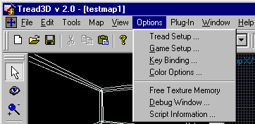
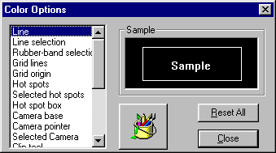
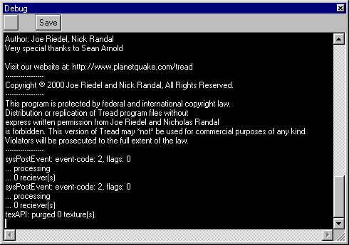

|
|
|---|
Options Menu

Tread Setup This will allow you to set the basic interfaces.

Game Setup This will allow you to set the texture and build directories.

Key Bindings This will allow you to bind editor functions to a key.

Color Options This will allow you to change the colors of items in the map workspace.
Free Texture Memory This will free all the texture memory.
Debug Window This will run a debug program.
Script Information This will tell you some basic information about the game scripts you have.